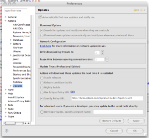

Studio Pro users have the choice of updating Aptana Studio to:
- current stable build
- next stable build (a near-ready pre-release version of the next "official" public release)
- nightly build
- special build available at an update policy URL
Pro and Community Edition users may change where Studio checks for updates by specifying a policy URL on the Install/Update preference panel.
Notes:
- To only update to the next stable build, you don't need to change your policy URL; just follow the instructions in Updating your version of Aptana Studio to update your stable build. By default the build version that you installed will automatically use the same type. We recommend always installing the stable build version unless you plan to have two instances of Aptana running on your computer.
- To manually download an update, see Aptana Studio Update Site Instructions
- You may need to start Eclipse from the command-line with the "clean" option (eclipse -clean) when the update doesn't complete properly.
Changing the Update Type
  Aptana Updates preference panel
Aptana Updates preference panel
{kind=link}
- From the Window menu, select Preferences....
- On the Preferences tree on the left, expand Aptana and select Updates (at right).
- Automatically find new updates and notify me box: Check to receive automatic updates
- Download Options: Choose whether to just notify you of new updates or to automatically download updates.
- What type of updates would you like to see?: Choose one of the following options:
- Stable/current - The current "official" release
- Next Release candidate - Fairly stable build that is a candidate to soon become the "official" release
- Nightly builds - The newest build that is available to the public. May contain bugs and may not be stable.
- Custom update policy - Manually specify a policy URL (see instructions below).
- Developer builds - Builds for Aptana internal use only.
- Click OK to save changes and close the Preferences window.
- Choose Check for Aptana Updates now from the Help menu to tell the update manager to check for the latest version.
Specifying a Policy URL
- From the Window menu, choose Preferences... and select the Install/Update panel.
- Enter a URL in the policy URL field.
- Click OK to save changes and close the Preferences window.
- Choose Check for Aptana Updates now from the Help menu to tell the update manager to check for the latest version.